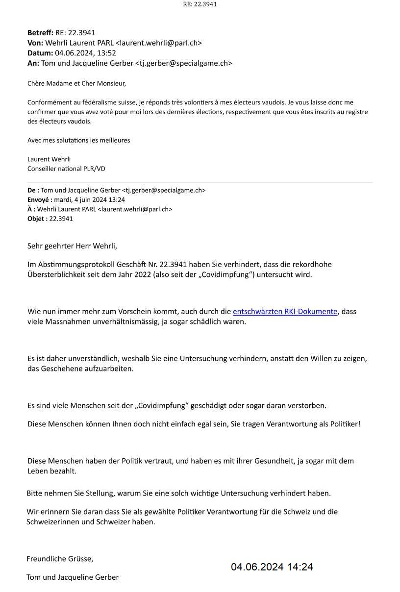

Laurent Wehrli, FDP, Kanton Waadt, Nationalrat seit 30.11.2015
Laurent Wehrli Nationalrat
Antwort vom 04.06.2024

Übersetzung bei Deepl:
Gemäß dem Schweizer Föderalismus antworte ich meinen waadtländischen Wählern sehr gerne. Ich lasse mir also von Ihnen bestätigen, dass Sie bei den letzten Wahlen für mich gestimmt haben bzw. dass Sie im Waadtländer Wählerregister eingetragen sind.